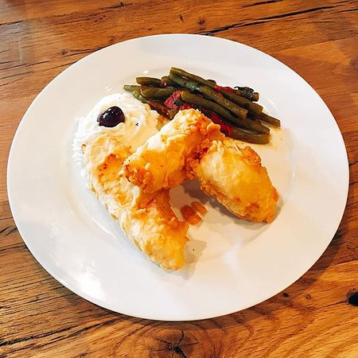

Bakaliaros Scordalia
Description
On the 25th of March, Greeks have a double celebration. We celebrate the Greek Independence and The Annunciation (Evangelismos) of Virgin Mary. The traditional dish of this day is Bakaliaros skordalia
Ingredients
- Oil for frying
- Beer
- Egg
- All purpose flour
- Parsley
Instructions
- In a bowl place the flour, parsley, beer and mix. Add the water gradually until the batter is thick. With a spoon mix in the meringue. Refrigerate for at least an hour before battering fish.
- Mix cod with batter and put it in hot oil
- Spoon the battered cod mix and fry in batches until golden brown.